A primary design goal for the relay computer is to reduce the number of and cost of the relays. It's fairly straightforward to make a relay computer with 250+ relays, but at $1.00 to $1.50 each, the cost can be prohibitive for a demonstration machine.
The relay computer uses common DPDT 8-pin DIP (dual-inline package) relays with 2A contacts and 12 V coils. These use the same .1 inch pin spacing as common through-hole integrated circuits. These relays were chosen because they are widely available, small and low cost. There are single pole and four pole variants, but they are either less standardized or more costly, so we avoid them.
There are (at least) two possible schemes for representing binary logic with relays. In one scheme, a closed circuit indicates one binary value (perhaps a 1) while an open circuit indicates the other value (a binary 0):
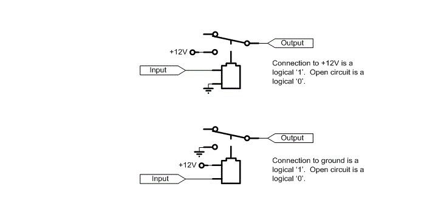This scheme simplifies the interface to semiconductor logic. In particular, low cost single-ended (or open collector) peripheral driver chips, such as ULN2803A, can be used to drive the relays:
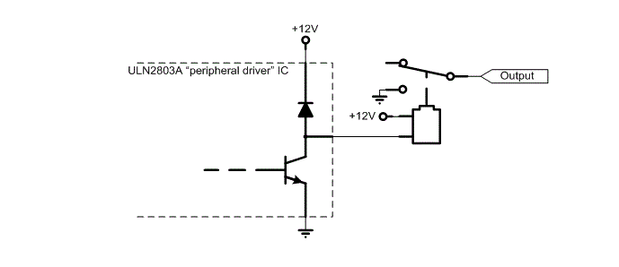 When the NPN transistor in the ULN2803A is turned on (when current is fed into its base), current is allowed to flow through the relay from the +12V terminal, through the coil, and then through the transistor to ground. When the NPN transistor is turned off, the connection is broken, but since the relay coil is an inductor, the current continues to flow. The voltage across the relay coil reverse and the current flows through the diode until the energy in the coil is exhausted.Another advantage of this single-ended scheme is that wide fan-in logic gates can easily be implemented, for example a "wired-OR" gate is easy: just put a bunch of relay contacts in parallel:
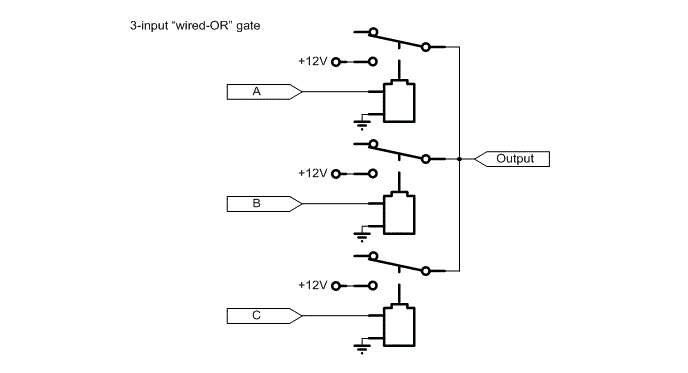Another scheme is to always have the circuit closed, but different binary values are represented by different voltage levels: 12V represents a binary 1 and 0V represents a binary 0.
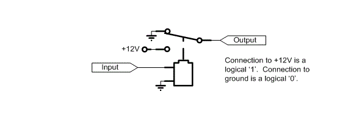This scheme requires the use of more costly "half H-bridge" driver chips (for example the L293 or the SN754410), which can drive both high and low. An "H-bridge" is a type of single-supply driver for DC motors which can reverse the polarity of the power going to the motor's terminals. Two "half H-bridge" drivers can drive a single motor in either direction.
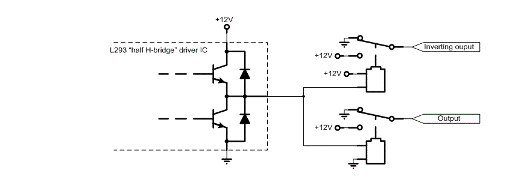This scheme makes it easy to implement exclusive-OR gates since a relay will energize if there is a difference in voltage on the coil (but if you intend to use this scheme, be careful of the use of polarized relays- relays which are biased with a permanent magnet to make them more sensitive):
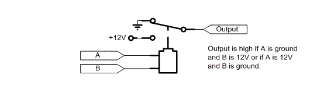Exclusive-OR gates are important because they allow you to make adders with a low relay count.
This scheme is also useful to help make low relay count flip-flops (see next section).
Both of these signaling schemes are used in this relay training computer. The voltage level logic scheme (with its half H-bridge drivers) is the default to keep the relay count low (and is the scheme used when relays drive other relays), but the open-circuit scheme (with its lower cost peripheral drivers) is used where semiconductors do not have to drive relay exclusive-OR gates or flip-flops.
Perhaps the most important aspect of any logic family is the design of its flip-flops. The choice of flip-flop design has a great impact on the complexity of the whole computer. Gate design is by comparison a much simpler task.
One way to make a latch is to energize the relay to set it, and use one of the relay's own normally open contacts in parallel with the coil to keep the relay energized. To clear the latch, another relay is energized to disconnect the power. This clearing relay could be shared by many latch relays (perhaps by each of the bits in a register).
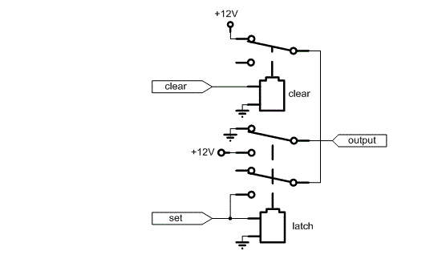This set / reset circuit can be turned into a transparent latch by adding a sampling relay. This leads to the need for a multi-phase clocking scheme: in the first phase clear the latch, then in the second phase connect the input to the latch relay:
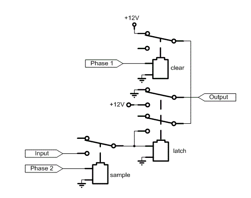A transparent latch's output can not feed its own inputs through any combinatorial logic path (this is true in any logic family). Instead, a master-slave flip-flop is needed. In one phase, the master side is connected to and latches the input. In the second phase, the master side is disconnected from the input and is then connected to the slave side to transfer the contents from master to slave. The slave side can have a combinatorial path back to the master side since they are never connected together at the same time:

The relay count for this scheme is quite high: two relays for each latch, then two more relays for the transmission gates: 6 relays for a one bit master-slave flip-flop. Furthermore, four non-overlapping clocking phases are needed to run it.
Luckily, the flip-flop can be vastly simplified with the voltage-level based logic scheme. First, the clearing relays can be dispensed with. Instead use holding resistors. The flip-flop is cleared to zero when the input is driven to zero when the transmission gate is closed. This causes the coil to de-energize, which opens the relay contacts connecting the holding resistor to the coil. Of course the input has to be able to sink all of the current from the holding resistor.
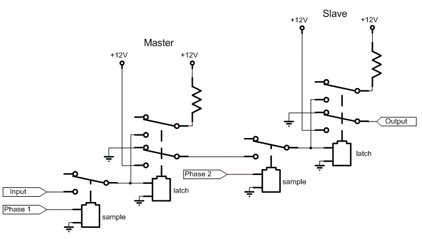If the value of the holding resistor is chosen carefully, the relay contacts dedicated to the holding resistor can be dispensed with. The holding resistor has to be small enough to provide the minimum amount of holding current to keep an energized relay latched but also large enough so that the relay will not spontaneously latch when it is de-energized. A side benefit of this always-connected holding resistor is that the sensitivity of the relay is increased: the amount of current which has to be supplied by the input to energize the relay is reduced since the holding resistor is providing part of it.
With the need for contacts used for the holding current eliminated, DPDT relays can provide both inverting and non-inverting outputs (Q and ~Q below), similar to a 7474 TTL flip-flop:
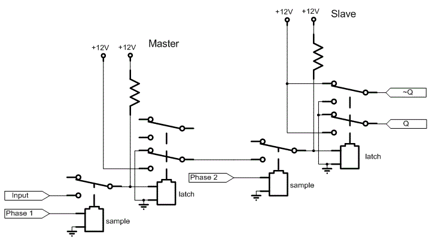The flip-flop can be simplified even further. Instead of using a relay for the master side of the flip-flop, a capacitor can be used. When the capacitor is connected to the input, it is charged or discharged to the input voltage. When the capacitor is switched to the slave side, its stored energy energizes or de-energizes the slave latch. The capacitor has to hold its charge only during the switchover from input to slave, which is a very short amount of time. In fact the capacitor size is determined by the amount of energy it needs to supply to energize or de-energize the slave flip-flop: the droop during the switchover ends up being insignificant.
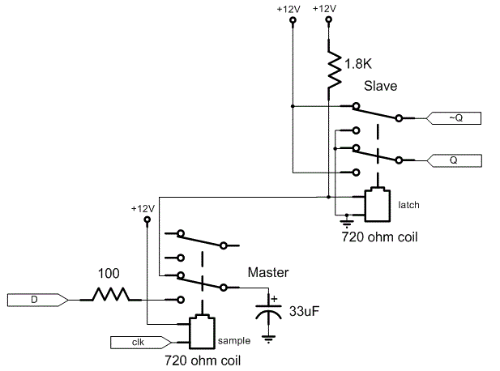Notice that the need for a multi-phase clock is completely eliminated. We end up with an edge-triggered D flip-flop which uses only 1.5 relays per bit (the second pole of the sampling flip-flop can be shared between bits).
The size of the capacitor and the size of the input resistor determine both the needed input current and the switching speed. With common DPDT DIP relays, a single flip-flop wired up as a divide-by-2 counter (~Q output connected to D input) could be clocked up to 70 Hz with a 33 uF flip-flop and a 100 ohm input resistor.
Note also that the clock (which could have a high fan-out) can still be driven by a single-ended driver.
Since it's easy to make a relay exclusive-OR gate, it is used as the basis for an incrementer (a circuit which adds 1 to the input). An incrementer followed by a register made up of the previously discussed flip-flops can be used to implement a counter. The program counter for the relay computer is implemented in just this way, except that it also has a multiplexer to allow it to be loaded for jumps.
In the following circuit, the lower relay is just an inverter. It can be dispensed with if the flip flop feeding it has both inverting and non-inverting outputs (the carry in to the second bit is the non-inverting output and the sum is the inverting output). The upper relay is a half-adder- it is both an exclusive-OR gate and an AND gate. The sum output is high if the carry in and input bit are different. The carry output is high only if both the input bit and the carry input are both high.
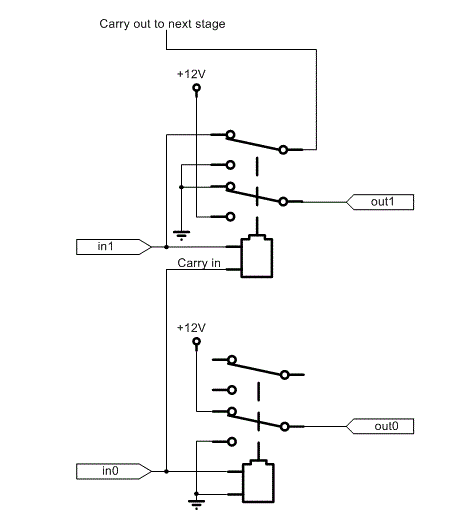Additional half-adders can be cascaded to make an arbitrarily wide incrementer, one relay per bit.
A problem with this circuit is that since the relay coils are in the carry chain, it is slower than it could be. A faster circuit is possible, but relays with more poles (or more relays in parallel) are needed. The trick is to use the relay to steer inverted and non-inverted versions of carry and never have a carry signal connected to a coil:
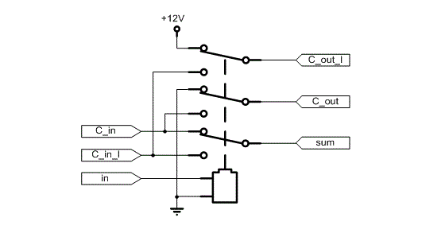Although this circuit is faster, it is not used in the relay computer for the program counter since cost is a bigger concern than speed.
The relay computer's ALU uses the following circuit to produce both A+B and A&B (it both adds and ANDs), except that two DPDT relays are used, not a single QPDT relay as shown. The datapath is 8 bits, so 16 DPDT relays are used for the adder/ANDer. Notice that one of the operands requires both inverting and non-inverting inputs.

A separate multiplexer selects between the sum and AND outputs. A complementer optionally produce the binary 1's complement of one of the operands for subtraction. It also produces both the direct and inverting outputs for the adder/ANDer:
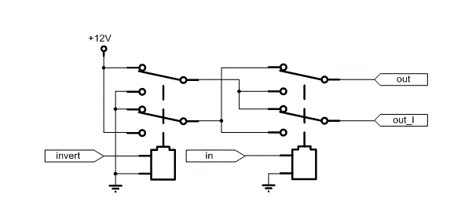The relay on the left is shared by each of the bits of the complementer.